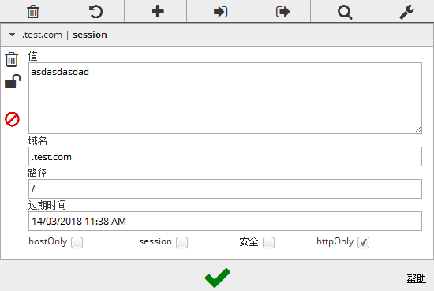
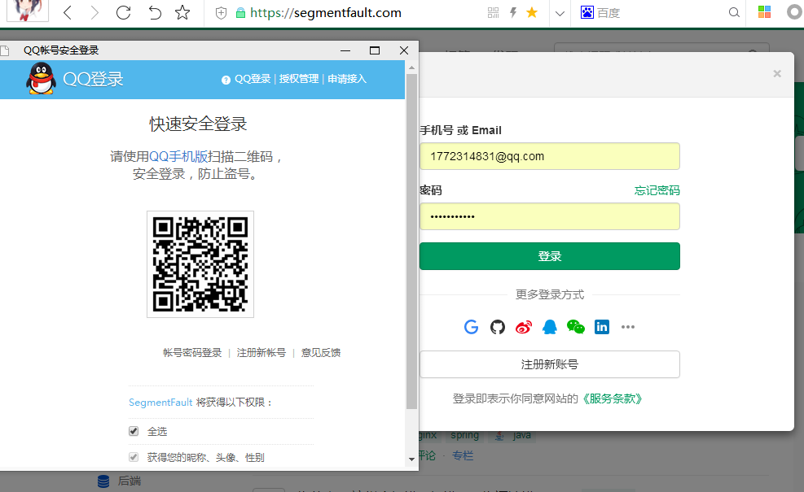

何为单点登陆，就是在一个站点登陆过后，打开该站点的周边站点时都不用再次登陆，同样的只要一个系统退出，其他的都会退出
最常见的解释百度搜索和百度贴吧了,只要在任意一个站点登陆baidu.com 和 tieba.baidu.com，另一个站点再打开时就不用再次登陆，默认就是已登陆
登陆状态存储
其实这并不是本篇文章要详细介绍的，但是有不可避免的要说下
如果是单系统，常见的就是session了，如果是多个服务，那么要做的就是session的持久化，以及在多个系统之间快速的查询和共享
一般Redis存储是一个非常不错的Session持久化解决方案，当然MySQL也可以，追求效率的话甚至可以放到内存中去
用mysql存储可以设计一个简单的表，比如session表(sid,user,失效时间，…)
验证逻辑
其实状态的检测和单系统的一样，主要的就是多个系统间登陆标记传递到后台，后台对标记有效性进行检测
-
进入系统（携带有Cookie）
-
检查
-
Cookie为空未登陆
-
数据库查询不到/失效为未登陆
-
不空，数据库有效为已登录
-
-
若登陆状态有效，渲染相应页面
-
若登陆状态无效，重新登陆，登陆成功后，写入cookie，服务端做状态持久化
和顶级域名共享cookie
最简单的一种，就是通过和顶级域名共享cookie
test.com、a.test.com、b.test.com是可以共享test.com下path为/的cookie信息的

代码很简单
//新建cookie
Cookie cookie = new Cookie("session", "asdasdasdad");
//js脚本将无法读取到cookie信息
cookie.setHttpOnly(true);
//有效期为1小时
cookie.setMaxAge(60 * 60);//
// *.test.com/* 下面都是共享的
cookie.setPath("/");
//注意是.开口
cookie.setDomain(".test.com");
//写入客户端
response.addCookie(cookie);
不同域名
不用想就知道在a.com的后台进行cookie.setDomain(".b.com")是肯定无效的,不然的话我岂不是可以修改任意一个网站的cookie了!
所以要解决a.com已登录，打开b.com也登陆用上面的方法是不行的
可以多个域名之间公用一个登陆系统
-
a.com/xxx.html点击登陆跳转到login.com（记住reference为a.com/xxx.html） -
登陆成功
login.com写入cookie到login.com -
同时重定向到
a.com/sso（url携带之前的referencea.com/xxx.html，和login.com登陆成功的cookie信息…） -
a.com拿到信息，再写入cookie到a.com再根据一直传递的reference再重定向到起始页面
第三方应用使用QQ登陆的oAuth授权认证就是这个原理

不同域名的改进
通过重定向方式的缺点相比第一种顶级域名共享cookie很明显，用户需要手动触发一次登陆，虽然是自动完成登陆，但是还是要点一下登陆很是麻烦
如果就几个系统的话，其实还可以优化
登陆成功后可以，类似轮询吧，把所有应用站点自动登录下，不管是否访问这个站点
跳到a.com写入cookie
跳到b.com写入cookie
跳到c.com写入cookie
跳回起始页面
总结
有时候概念听起来高大上，其实也不难，主要是一个SSO概念的理解和如何实现客户端多个应用共享同一个状态